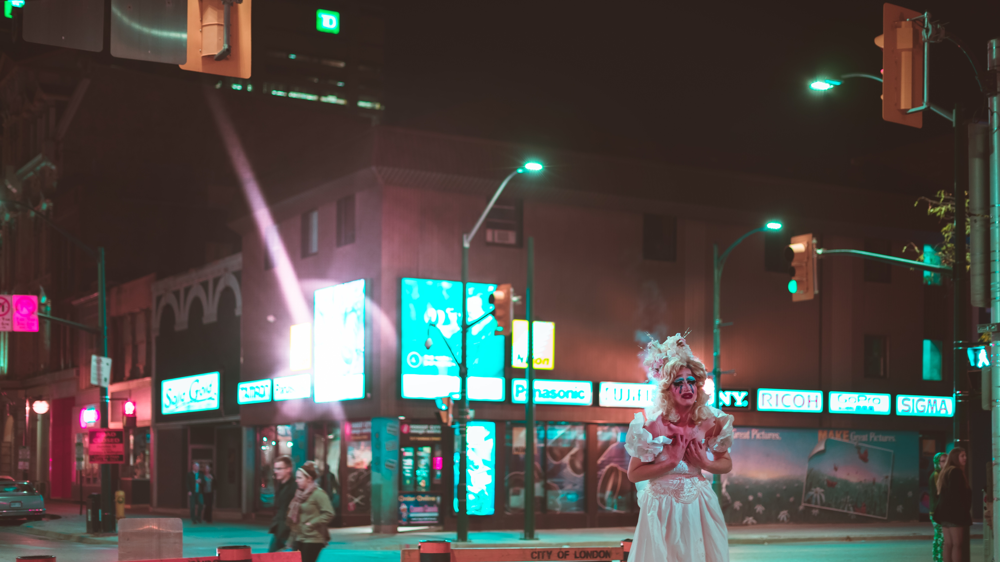
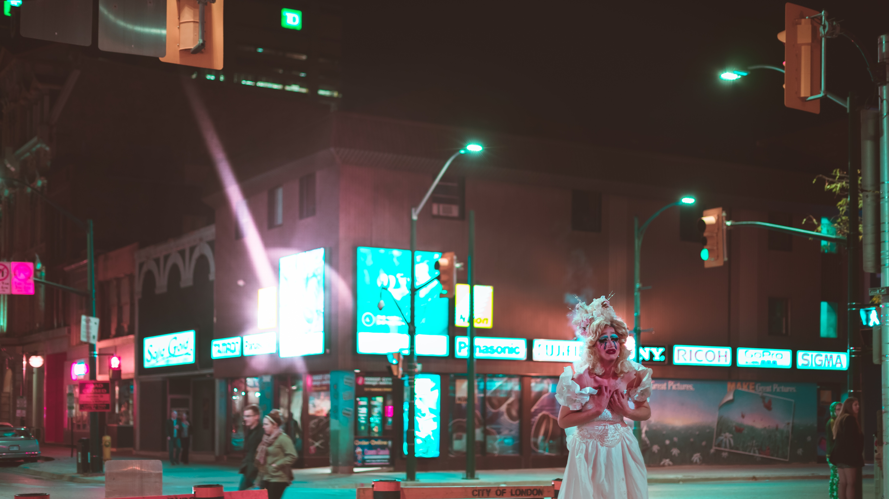

WD Rascals joins us from Paris. The band has a light sound and a golden style, bringing eclectic guitars, jilted
rhythm, extreme vocals, and turquoise songwriting to the table. The band has been transversing ears in venues
across the world since 1997. WD Rascals plays tunes from a variety of genres, and their influences include
bands like Wham! and The Killers. Look out for WD Rascals coming to your local ski lodge this mud season!
Look out for their buzz coming to your local pub this dusk till dawn!